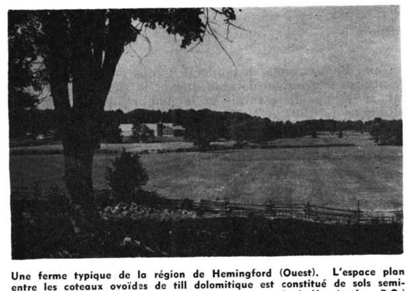
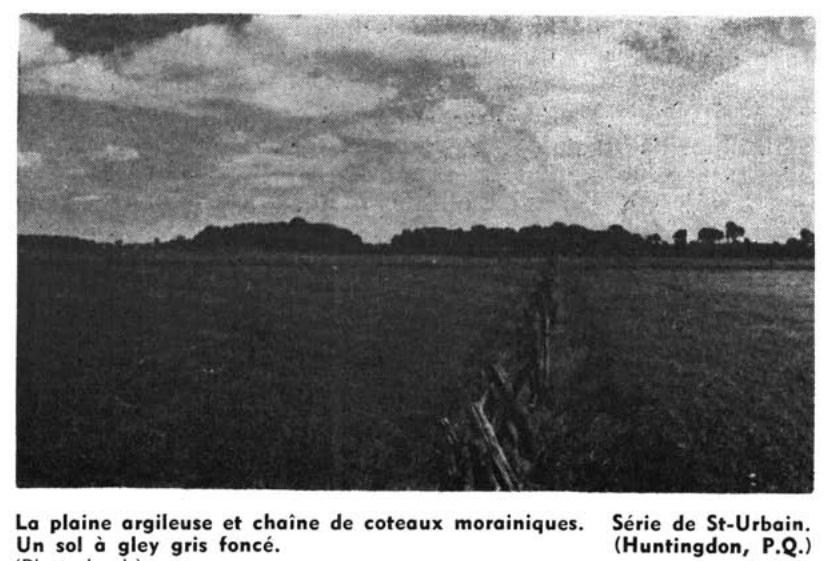

Identification & Caractéristiques Générales
Les sols de la série de Saint-Urbain se sont développés sur des dépôts argileux très fins et stratifiés, caractérisés par une nature alcaline et une faible teneur en carbonates. Ces matériaux parentaux d'origine sédimentaire marine et lacustre occupent les anciens chenaux d'érosion creusés par le Proto-Saint-Laurent au sein de la plaine étale de la vallée du Saint-Laurent. La géomorphologie régionale se caractérise par une topographie plane à sub-horizontale, où les pentes varient de 0 à 2 %, favorisant des conditions d'accumulation et une sédimentation fine en milieu bas-de-pente ou en cuvette.
Le profil pédologique, dont la profondeur du solum oscille entre 60 et 90 cm, présente un mauvais drainage naturel tant externe qu'interne en raison de la texture lourde du substrat. Le contenu en fragments grossiers est nul ou très faible (0 à 10 % en surface). La morphologie montre un horizon de surface (Ap ou Apg) à texture d'argile limoneuse ou d'argile, dont la réaction varie de moyennement acide à faiblement alcaline, sous-tendu par un horizon sous-jacent (Bg) argileux à argileux lourd affichant des teintes gris olive (5Y) révélant des conditions gleyfiées précoces, le gley apparaissant généralement entre 0 et 30 cm de profondeur. L'horizon inférieur (Ckg) est constitué d'une argile lourde massive, parfois stratifiée de lits minces de sable fin ou de loam sableux, ferme, peu poreuse et modérément calcaire, avec une présence de carbonates libres mesurée entre 40 et 110 cm de profondeur.
Sur le plan agronomique, ces sols sont principalement exploités pour les grandes cultures et les cultures fourragères. Les limitations majeures découlent de la texture argileuse lourde et de l'hydromorphie prononcée, entraînant une perméabilité réduite et un réchauffement printanier tardif. La mise en valeur optimale de cette série requiert l'installation d'un réseau de drainage souterrain serré pour abaisser la nappe perchée temporaire, ainsi qu'une gestion rigoureuse de la portabilité des équipements afin d'éviter la compaction excessive et la détérioration de la structure lors des interventions culturales.
Classification Taxonomique & Environnement Pédologique
| Ordre Pédologique | Gleysolique |
|---|---|
| Grand Groupe (SCSS) | Gleysol humique |
| Sous-Groupe Taxonomique | Gleysol humique orthique |
| Famille Pédologique | Argileuse-très fine, mixte argileux, alcalin (calcaire) |
| Mode de Dépôt Parental | Marin |
| Classe de Drainage Naturel | Mal drainé |
| Régime Thermique & Humidité | Doux / Perhumide |
Description Morphologique du Profil Type
Séquences génétiques des horizons pédologiques caractérisant le profil type représentatif de la série Saint-Urbain :
Profil cultivé (agricole) — Comté de Chambly
✓ Source : Comté de Chambly — Page 118Couleur Munsell : Non précisée
Structure & Consistance : Polyédrique subangulaire
Description morphologique : Argile; brun grisâtre très foncé à brun grisâtre foncé (2.5Y 3,5/2); structure polyédrique subangulaire, fine, faiblement développée; consistance friable; peu poreuse; limite nette, ondulée; réaction faiblement alcaline.
Couleur Munsell : 5Y 5/2 (matrice), 10YR 5/4 (marbrures)
Structure & Consistance : Polyédrique subangulaire
Description morphologique : Argile lourde; gris olivâtre (5Y 5/2); marbrures brun jaunâtre (10YR 5/4), nombreuses, fines et moyennes, marquėes; structure polyédrique subangulaire, fine, faiblement développée; consistance friable, peu poreuse; limite nette, ondulée; effervescence faible; réaction faiblement alcaline.
Couleur Munsell : 10YR 5/4
Structure & Consistance : Polyédrique subangulaire
Description morphologique : Argile lourde; gris olivâtre (5Y 4,5/2); marbrures brun jaunâtre (10YR 5/4), nombreuses, fines, marquées; structure polyédrique subangulaire, fine, modérément à fortement développée; consistance très friable; modérément poreuse; limite graduelle, régulière; effervescence modérée; réaction faiblement alcaline.
Couleur Munsell : Non précisée
Structure & Consistance : Polyédrique subangulaire
Description morphologique : Argile lourde; gris foncé à gris (5Y 4,5/1); marbrures brun jaunâtre à brun jaunâtre clair (10YR 5,5/4), nombreuses, fines, marquées; structure polyédrique subangulaire, fine, fortement développée; consistance très friable; très poreuse; limite nette, régulière; effervescence modérée; réaction modérément alcaline.
Couleur Munsell : 10YR 5/6
Structure & Consistance : Polyédrique à granulaire
Description morphologique : Argile lourde; gris olivâtre (5Y 4,5/2); marbrures brun jaunâtre (10YR 5/6), nombreuses, fines, marquėes; massive; consistance ferme; peu poreuse; effervescence modérée; réaction modérément alcaline.
Profil cultivé (agricole) — Comté de Chambly
✓ Source : Comté de Chambly — Page 120Couleur Munsell : 5Y 3/2
Structure & Consistance : Polyédrique subangulaire
Description morphologique : Argile limoneuse; gris olivâtre foncé (5Y 3/2); structure polyédrique subangulaire, fine, faiblement développée; consistance friable; modérément poreuse; limite abrupte, régulière; réaction neutre.
Couleur Munsell : 10YR 5/4
Structure & Consistance : Polyédrique subangulaire
Description morphologique : Argile lourde; gris olivâtre foncé à gris olivâtre (5Y 3,5/2); marbrures brun jaunâtre (10YR 5/4), nombreuses, fines, marquées; structure polyédrique subangulaire, fine, modérément à fortement développée; consistance friable, très poreuse; limite abrupte, régulière; effervescence faible; réaction neutre.
Couleur Munsell : 5Y 4/2 (matrice), 10YR 4/4 (marbrures)
Structure & Consistance : Polyédrique subangulaire
Description morphologique : Argile (présence de lits de loam sableux fin ou de loam limoneux); gris olivâtre (5Y 4/2); marbrures brun jaunâtre foncé (10YR 4/4), nombreuses, fines, marquées; structure polyédrique subangulaire, fine et moyenne, modérément à fortement développée; consistance friable; très poreuse; effervescence modérée; réaction faiblement alcaline.
Profil cultivé (agricole) — Comté de Chambly
✓ Source : Comté de Chambly — Page 150Couleur Munsell : 2.5Y 3.5/2, 10YR 5/2
Structure & Consistance : Polyédrique subangulaire fine
Description morphologique : Argile, brun-gris très foncé (2.5Y 3.5/2 h) brun-gris (10YR 5/2 s); structure polyédrique subangulaire fine, faible; friable à l'état humide; peu poreux; transition nette et ondulée; faiblement alcalin.
Couleur Munsell : 5Y 5/2 (matrice), 10YR 5/4 (marbrures)
Structure & Consistance : Polyédrique subangulaire fine
Description morphologique : Argile lourde, gris-olive (5Y 5/2 h); marbrures très nombreuses, petites à moyennes, marquées, brun-jaune (10YR 5/4 h); structure polyédrique subangulaire fine, faible; friable à l'état humide; peu poreux; transition nette et ondulée; effervescence faible; faiblement alcalin.
Couleur Munsell : 5Y 4.5/2 (matrice), 10YR 5/4 (marbrures)
Structure & Consistance : Polyédrique subangulaire fine
Description morphologique : Argile lourde, gris-olive (5Y 4.5/2 h); marbrures très nombreuses, petites, marquées, brun-jaune (10YR 5/4 h); structure polyédrique subangulaire fine, modérée à forte; très friable à l'état humide; assez poreux; transition graduelle et régulière; effervescence modérée; faiblement alcalin.
Couleur Munsell : 5Y 4.5/1 (matrice), 10YR 5.5/4 (marbrures)
Structure & Consistance : Polyédrique subangulaire fine
Description morphologique : Argile lourde, gris foncé (5Y 4.5/1 h); marbrures très nombreuses, petites, marquées, brun-jaune (10YR 5.5/4 h); structure polyédrique subangulaire fine, marquées; très friable à l'état humide; très poreux; transition nette et ondulée; effervescence modérée; moyennement alcalin.
Couleur Munsell : 5Y 4.5/2 (matrice), 10YR 5/6 (marbrures)
Structure & Consistance : Massive
Description morphologique : Argile lourde, gris-olive (5Y 4.5/2 h); marbrures très nombreuses, petites, marquées, brun-jaune (10YR 5/6 h); structure massive; très ferme à l'état humide; peu poreux; effervescence modérée; moyennement alcalin.
Profil cultivé (agricole) — Comté de Chambly
✓ Source : Comté de Chambly — Page 152Couleur Munsell : 10YR 2.5/1, 10YR 4/2
Structure & Consistance : Granulaire fine
Description morphologique : Argile, noire (10YR 2.5/1 h) brun-gris foncé (10YR 4/2 s); structure granulaire fine, modérée à forte; très friable à l'état humide; assez poreux; transition nette et ondulée; faiblement acide.
Couleur Munsell : 5Y 6/2 (matrice), 10YR 6/4 (marbrures)
Structure & Consistance : Massive à polyédrique sub-angulaire fine
Description morphologique : Argile lourde, gris-olive clair (5Y 6/2 h); marbrures très nombreuses, petites, marquées, brun-jaune clair (10YR 6/4 h); structure massive à polyédrique sub-angulaire fine, faible; ferme à l'état humide; peu poreux; transition graduelle et régulière; neutre.
Couleur Munsell : 5Y 5/2 (matrice), 10YR 5/6 (marbrures)
Structure & Consistance : Polyédrique subangulaire moyenne à grossière
Description morphologique : Argile lourde, gris-olive (5Y 5/2 h); marbrures très nombreuses, petites, marquées, brun-jaune (10YR 5/6 h); structure polyédrique subangulaire moyenne à grossière, faible à modérée; friable à l'état humide; peu poreux; transition nette et régulière; faiblement alcalin.
Couleur Munsell : 5Y 6/2 (matrice), 2.5Y 6/4 (marbrures)
Structure & Consistance : Massive
Description morphologique : Argile lourde, gris-olive clair (5Y 6/2 h); marbrures très nombreuses, petites, distinctes, brun-jaune clair (2.5Y 6/4 h); structure massive; ferme à l'état humide, collant à l'état trempé; peu poreux; faiblement alcalin.
Profil cultivé (agricole) — Comté de Chambly
✓ Source : Comté de Chambly — Page 153Couleur Munsell : 10YR 3/3, 2.5Y 5.5/4
Structure & Consistance : Massive à polyédrique subangulaire fine
Description morphologique : Argile limoneuse, brun foncé (10YR 3/3 h) olive clair (2.5Y 5.5/4 s); structure massive à polyédrique subangulaire fine, faible; friable à l'état humide; peu poreux; transition nette et ondulée; faiblement acide.
Couleur Munsell : 2.5Y 5.5/2 (matrice), 10YR 5/4 (marbrures)
Structure & Consistance : Massive à polyédrique subangulaire fine
Description morphologique : Argile lourde, gris-brun clair (2.5Y 5.5/2 h); marbrures très nombreuses, petites, moyennes, marquées, brun-jaune (10YR 5/4 h); structure massive à polyédrique subangulaire fine, faible; friable à l'état humide; peu poreux; transition graduelle et ondulée; neutre.
Couleur Munsell : 2.5Y 6/2 (matrice), 2.5Y 4.5/4 (marbrures)
Structure & Consistance : Polyédrique subangulaire fine
Description morphologique : Argile lourde, gris-brun clair (2.5Y 6/2 h); marbrures très nombreuses, petites à moyennes, marquées, olive clair (2.5Y 4.5/4 h); structure polyédrique subangulaire fine, faible; très friable à l'état humide; peu poreux; transition graduelle et régulière; faiblement alcalin.
Couleur Munsell : 5Y 6/2 (matrice), 10YR 5/4 (marbrures)
Structure & Consistance : Polyédrique subangulaire fine à moyenne
Description morphologique : Argile lourde, gris-olive clair (5Y 6/2 h); marbrures très nombreuses, petites à moyennes, marquées, brun-jaune (10YR 5/4 h); structure polyédrique subangulaire fine à moyenne, forte; très friable à l'état humide; très poreux; transition graduelle et ondulée; moyennement alcalin.
Couleur Munsell : 5Y 6/2 (matrice), 10YR 5/6 (marbrures)
Structure & Consistance : Massive
Description morphologique : Argile lourde, gris-olive clair (5Y 6/2 h); marbrures très nombreuses petites à moyennes, marquées, brun-jaune (10YR 5/6h); structure massive; très ferme à l'état humide; peu poreux; moyennement alcalin.
Profil cultivé (agricole) — Comté de Chambly
✓ Source : Comté de Chambly — Page 155Couleur Munsell : 10YR 3/3, 10YR 6/3
Structure & Consistance : Polyédrique subangulaire fine
Description morphologique : Argile, brun foncé (10YR 3/3 h) brun pâle (10YR 6/3 s); structure polyédrique subangulaire fine, faible; friable à l'état humide; peu poreux; présence de fragments grossiers; transition nette et ondulée; neutre.
Couleur Munsell : 2.5Y 4/2 (matrice), 10YR 4/6 (marbrures)
Structure & Consistance : Massive
Description morphologique : Argile, brun-gris foncé (2.5Y 4/2 h); marbrures très nombreuses, petites à grandes, marquées, brun-jaune foncé (10YR 4/6 h); structure massive; friable à l'état humide; peu poreux; présence de fragments grossiers; transition abrupte et régulière; faiblement alcalin.
Couleur Munsell : 5Y 4.5/2 (matrice), 10YR 4/6 (marbrures)
Structure & Consistance : Polyédrique subangulaire fine
Description morphologique : Argile lourde, gris-olive (5Y 4.5/2 h); marbrures très nombreuses, petites à grandes, marquées, brun-jaune foncé (10YR 4/6 h); structure polyédrique subangulaire fine, faible; très friable à l'état humide; assez poreux; transition nette et régulière; neutre.
Couleur Munsell : 5Y 4.5/2 (matrice), 10YR 5/6 (marbrures)
Structure & Consistance : Polyédrique subangulaire fine
Description morphologique : Argile lourde, gris-olive (5Y 4.5/2 h); marbrures très nombreuses, petites et moyennes, marquées, brun-jaune (10YR 5/6 h); structure polyédrique subangulaire fine, modérée; très friable à l'état humide; assez poreux; transition nette et régulière; faiblement alcalin.
Couleur Munsell : 5Y 5/2.5 (matrice), 10YR 5/6 (marbrures)
Structure & Consistance : Massive
Description morphologique : Argile lourde, gris-olive (5Y 5/2.5 h); marbrures très nombreuses, moyennes et grandes, marquées, brun-jaune (10YR 5/6 h); structure massive; ferme à l'état humide; peu poreux; faiblement alcalin.
Profil cultivé (agricole) — Comté de Chambly
✓ Source : Comté de Chambly — Page 156Couleur Munsell : 10YR 3/3
Structure & Consistance : Granulaire fine
Description morphologique : Argile; brun foncé (10YR 3/3 h); structure granulaire fine, faible; friable à ferme à l'état humide; peu poreux; transition nette et ondulée; neutre.
Couleur Munsell : 2.5Y 5/2 (matrice), 10YR 5/6 (marbrures)
Structure & Consistance : Polyédrique subangulaire très fine
Description morphologique : Argile limoneuse; brun-gris (2.5Y 5/2 h); marbrures très nombreuses, petites, très marquées, brun-jauné (10YR 5/6 h); structure polyédrique subangulaire très fine, faible à massive; friable à l'état humide; transition nette et régulière; neutre.
Couleur Munsell : 5Y 4.5/2 (matrice), 7.5YR 4/4 (marbrures)
Structure & Consistance : Polyédrique subangulaire fine
Description morphologique : Argile; gris-olive (5Y 4.5/2 h); marbrures nombreuses, petites, très marquées, brun foncé (7.5YR 4/4 h); structure polyédrique subangulaire fine, modérée à pseudo lamellaire moyenne, faible; très friable à l'état humide; assez poreux; transition nette et régulière; faiblement alcalin.
Couleur Munsell : 5Y 5/2 (matrice), 10YR 5/6 (marbrures)
Structure & Consistance : Polyédrique angulaire grossière
Description morphologique : Argile lourde; gris-olive (5Y 5/2 h); marbrures nombreuses, petites, très marquées, brun-jaune (10YR 5/6 h); structure polyédrique angulaire grossière, forte; ferme à l'état humide; très poreux; moyennement alcalin.
Profil forestier / boisé — Comté de Chambly
✓ Source : Comté de Chambly — Page 158Couleur Munsell : Non précisée
Structure & Consistance : Polyédrique à granulaire
Description morphologique : Organique; racines très abondantes, moyennes, obliques; transition nette et ondulée.
Couleur Munsell : 10YR 2/1.5
Structure & Consistance : En couches
Description morphologique : Horizon humide; brun très foncé (10YR 2/1.5 h) racines abondantes, fines, obliques; composition botanique: mousses 10%, bois 10%, amorphes 80%; structure en couches, faible; collant à l'état trempé; moyennement décomposé; transition abrupte et ondulée; très fortement acide.
Couleur Munsell : 7.5YR 3/2
Structure & Consistance : Massive
Description morphologique : Horizon humide; brun foncé (7.5YR 3/2 h), aucune racine; composition botanique: laîches 10%, mousses 10%, bois 10%, amorphes 70%; structure massive; peu collant à l'état trempé; moyennement décomposé; transition nette; fortement acide.
Couleur Munsell : 10YR 2.5/2
Structure & Consistance : Massive
Description morphologique : Horizon humide; brun très foncé (10YR 2.5/2 h), aucune racine; composition botanique: mousses 40%, bois 10%, amorphes 50%; structure massive; peu collant à l'état trempé; moyennement décomposé; transition graduelle; fortement acide.
Couleur Munsell : 5Y 5/1
Structure & Consistance : Massive
Description morphologique : Argile lourde; gris (5Y 5/1 h); structure massive; très collant à l'état trempé; neutre.
Profil forestier / boisé — Comté de Chambly
✓ Source : Comté de Chambly — Page 159Couleur Munsell : Non précisée
Structure & Consistance : Polyédrique à granulaire
Description morphologique : Horizon humide; racines abondantes fines, obliques; composition botanique: sphaignes 85%, amorphes 15%; faiblement décomposé; extrêmement acide.
Couleur Munsell : 7.5YR 2/2
Structure & Consistance : Massive
Description morphologique : Horizon humide; brun très foncé (7.5YR 2/2); peu de racines fines, obliques; composition botanique: bois 10%, amorphes 90%; structure massive; collant à l'état trempé; fortement décomposé; transition nette et ondulée; extrêmement acide.
Couleur Munsell : 5YR 3/2
Structure & Consistance : Massive
Description morphologique : Horizon humide; brun-rouge foncé (5YR 3/2); racines abondantes, fines, obliques, composition botanique: bois 20%, amorphes 80%; structure massive; collant à l'état trempé; fortement décomposé; transition nette et ondulée; extrêmement acide.
Couleur Munsell : 10YR 2/1.5
Structure & Consistance : Massive
Description morphologique : Horizon humide; noir (10YR 2/1.5); aucune racine; composition botanique: mousses 20%, bois 10%, amorphes 70%; structure massive; peu collant à l'état trempé; moyennement décomposé; transition nette et ondulée.
Couleur Munsell : 10YR 2/1.5
Structure & Consistance : Massive
Description morphologique : Horizon humide; noir (10YR 2/1.5); aucune racine; composition botanique: mousses 10%, bois 10%, amorphes 80%; structure massive; collant à l'état trempé; fortement décomposé; transition abrupte et régulière.
Couleur Munsell : 5Y 4.5/1
Structure & Consistance : Polyédrique à granulaire
Description morphologique : Argile; gris foncé (5Y 4.5/1 h); neutre.
Profil forestier / boisé — Comté de Chambly
✓ Source : Comté de Chambly — Page 161Couleur Munsell : Non précisée
Structure & Consistance : Fibreuses
Description morphologique : Horizon humide; composition botanique: laîches 85%, amorphes 15%; structure fibreuses; transition abrupte et ondulée; extrêmement acide.
Couleur Munsell : 10YR 2/2
Structure & Consistance : Massive
Description morphologique : Horizon humide; brun très foncé (10YR 2/2 h); peu de racines, moyennes, obliques; composition botanique: mousses 10%, bois 20%, amorphes 70%; structure massive; peu collant à l'état trempé; fortement décomposé; transition nette et ondulée; extrêmement acide.
Couleur Munsell : 7.5YR 3/2
Structure & Consistance : Massive
Description morphologique : Horizon humide; brun foncé (7.5YR 3/2 h); composition botanique: mousses 10%, bois 10%, amorphes 80%; structure massive; collant à l'état trempé; très fortement décomposé; transition nette et ondulée; extrêmement acide.
Couleur Munsell : 7.5YR 2/2
Structure & Consistance : Massive
Description morphologique : Horizon humide; brun très foncé (7.5YR 2/2 h); composition botanique: mousses 30%, bois 5%, amorphes 65%; structure massive; peu collant à l'état trempé; modérement décomposé; transition nette et régulière.
Couleur Munsell : 7.5YR 3/2
Structure & Consistance : Massive
Description morphologique : Horizon humide; brun foncé (7.5YR 3/2 h); composition botanique: mousses 30%, bois 20%, amorphes 50%; structure massive; peu collant à l'état trempé; faiblement décomposé; transition graduelle; très fortement acide.
Couleur Munsell : 5GY 4/1
Structure & Consistance : Massive
Description morphologique : Argile limoneuse; gris-vert foncé (5GY 4/1 h); structure massive; neutre.
Profil forestier / boisé — Comté de Chambly
✓ Source : Comté de Chambly — Page 162Couleur Munsell : 10YR 2/1.5
Structure & Consistance : Granulaire fine
Description morphologique : Horizon humide; noir (10YR 2/1.5 h); structure granulaire fine, faible à modérée; fortement décomposé; transition nette et ondulée; moyennement acide.
Couleur Munsell : 5YR 2.5/2.5
Structure & Consistance : Lamellaire fine
Description morphologique : Horizon humide; brun-rouge foncé (5YR 2.5/2.5 h), structure lamellaire fine, faible; moyennement décomposé; transition nette et ondulée; moyennement acide.
Couleur Munsell : 10YR 2/2
Structure & Consistance : Polyédrique à granulaire
Description morphologique : Horizon humide; brun très foncé (10YR 2/2 h), fortement décomposé; transition abrupte et régulière; fortement acide.
Couleur Munsell : 5Y 4/2
Structure & Consistance : Massive
Description morphologique : Argile lourde; gris-olive (5Y 4/2 h); structure massive, nette et régulière; neutre.
Couleur Munsell : Non précisée
Structure & Consistance : Polyédrique à granulaire
Description morphologique : Argile limoneuse; neutre.
Profil forestier / boisé — Comté de Chambly
✓ Source : Comté de Chambly — Page 164Couleur Munsell : 2.5YR 2.5/2
Structure & Consistance : En couches
Description morphologique : Horizon humide; rouge très sombre (2.5YR 2.5/2 h); racines très nombreuses très fines à grosses, horizontales et obliques; composition botanique: tourbe forestière de bois; structure en couches, faible; transition abrupte et ondulée; extrêmement acide.
Couleur Munsell : 10YR 3/5
Structure & Consistance : En couches
Description morphologique : Horizon humide; brun-jaune foncé (10YR 3/5 h); racines nombreuses très fines à moyennes, obliques; composition botanique: tourbe fennique de bois et tourbe forestière de bois; structure en couches, faible; transition abrupte et ondulée.
Couleur Munsell : 10YR 2/2
Structure & Consistance : En couches
Description morphologique : Horizon humide; brun très foncé (10YR 2/2 h); racines peu nombreuses très fines à moyennes, verticales et obliques; composition botanique: tourbe fennique de bois et tourbe forestière de bois; structure en couches, faible; transition abrupte et régulière; fortement acide.
Couleur Munsell : 5Y 5/2
Structure & Consistance : Massive
Description morphologique : Argile lourde; gris-olive (5Y 5/2 h); structure massive; très collant à l'état trempé; moyennement alcalin.
Profil cultivé (agricole) — Comté de Châteauguay
✓ Source : Comté de Châteauguay — Page 76Couleur Munsell : 10YR 5/1
Structure & Consistance : Granulaire bien développée
Description morphologique : Argile de teinte noire à l'état humide ou grise (10YR 5/1) à l'état sec, fortement humifère avec structure granulaire bien développée. Consistance friable; pH: 6.3 — 7.0.
Couleur Munsell : 10YR 7/1
Structure & Consistance : Massive ou granulaire
Description morphologique : Argile très lourde, gris clair (10YR 7/1) avec un ton olive; structure massive ou granulaire. Consistance compacte. Fait effervescence parfois au contact de HCl dilué; pH: 7.2 — 7.8.
Couleur Munsell : 5Y 7/1
Structure & Consistance : Massive
Description morphologique : Roche-mère: Argile très lourde, calcaire et de teinte gris-bleu ou gris clair à l'état sec (5Y 7/1), avec un ton olive. Structure massive, consistance très plastique; elle réagit au contact de HCl dilué. pH: 7.5 — 8.3.
Profil cultivé (agricole) — Comté de Argenteuil
✓ Source : Comté de Argenteuil — Page 58Couleur Munsell : Non précisée
Structure & Consistance : En mottes ou granuleuse
Description morphologique : Argile gris très foncé à noire; structure en mottes ou granuleuse; très ferme lorsque'elle est humide, très dure lorsqu'elle est sèche, très plastique et collante lorsqu'elle est mouillée; pH 6.4-7.2.
Couleur Munsell : Non précisée
Structure & Consistance : Cuboïde anguleuse
Description morphologique : Argile lourde gris foncé à gris très foncé avec mouchetures à faible contraste de brun grisâtre très foncé et de brun foncé; structure cuboïde anguleuse; très dure lorsqu'elle est sèche et très plastique lorsqu'elle est mouillée; pH 7.0-7.3.
Couleur Munsell : Non précisée
Structure & Consistance : Et consistance comme dans l'horizon ci-dessus
Description morphologique : Argile gris foncé avec mouchetures à faible contraste très délicat de brun grisâtre foncé et très foncé; structure et consistance comme dans l'horizon ci-dessus; pH .0-7.4.
Couleur Munsell : Non précisée
Structure & Consistance : Polyédrique à granulaire
Description morphologique : Argile gris foncé avec taches de gris et de brun grisâtre foncé; l'argile fait fortement effervescence sous l'action de l'acide; couche occasionnelle d'argile brun rougeâtre; fortement plastique et collante; pH 7.2-7.6.
Profil cultivé (agricole) — Comté de L'assomption
✓ Source : Comté de L'assomption — Page 47Couleur Munsell : 10YR 3/2
Structure & Consistance : Granuleuse
Description morphologique : Argile brun grisâtre très foncé à gris très foncé (10YR 3/2-3/1); structure granuleuse; très ferme à l'état de faible humidité, dure à l'état sec, très plastique et très collante à l'état humide; pH 6.0 à 6.9.
Couleur Munsell : 5Y 3/1 (matrice), 10YR 4/2 (marbrures)
Structure & Consistance : Cuboïde anguleuse assez bien développée
Description morphologique : Argile gris foncé à très foncé (5Y 3/1-4/1), avec mouchetures faiblement contrastantes de brun grisâtre foncé à très foncé (10YR 4/2-2.5Y 3/2); structure cuboïde anguleuse assez bien développée; dur à l'état sec, plastique et collante à l'état très humide; pH 6.7 à 7.3.
Couleur Munsell : 5Y 4/1
Structure & Consistance : Polyédrique à granulaire
Description morphologique : Argile gris foncé (5Y 4/1) avec taches de brun grisâtre foncé; carbonates souvent décelés; pH 7.3 à 7.6.
Profil représentatif — Comté de Maskinongé
✓ Source : Comté de Maskinongé — Page 44Couleur Munsell : 10YR 2/1
Structure & Consistance : Polyédrique à granulaire
Description morphologique : Argile humifère, noir à brun très foncé (10YR 2/1 - 2/2) très meuble et friable. pH : 6.5 - 7.0.
Couleur Munsell : 5Y 5/2
Structure & Consistance : Massive
Description morphologique : Argile gris olive (5Y 5/2) structure massive. Assez compacte. Présence de nombreuses taches rouillées. pH : 7.5.
Couleur Munsell : 5Y 5/2
Structure & Consistance : Polyédrique à granulaire
Description morphologique : Roche-mère : argile très lourde, gris olive (5Y 5/2) massive, très compacte, gorgée d'eau. pH : 7.8 +.
Profil cultivé (agricole) — Sols de l'île de Montréal
✓ Source : Sols de l'île de Montréal — Page 62Couleur Munsell : Non précisée
Structure & Consistance : Mottée à granulaire
Description morphologique : Argile gris très foncé à noire (5y3/1-2/1) ou (106r3/1); structure mottée à granulaire; très ferme lorsque humide; très dure lorsque sèche; très plastique et collante lorsque mouillée; pH 6·0 à 6·2.
Couleur Munsell : Non précisée
Structure & Consistance : Fragmentaire ou en cubes bien définis (plusieurs agrégats de ¼″ et quelques-uns de 1″)
Description morphologique : Argile fine gris foncé à gris très foncé (6y3/1-4/1) avec mouchetures à faible contraste de brun grisâtre très foncé (2.5y3/2) et de brun foncé (10yr4/3); structure fragmentaire ou en cubes bien définis (plusieurs agrégats de ¼″ et quelques-uns de 1″); très dure lorsque sèche et très plastique lorsque mouillée; pH 7·1.
Couleur Munsell : Non précisée
Structure & Consistance : Et consistance comme dans l'horizon ci-dessus
Description morphologique : Argile gris foncé (5y4/1-2.5y1/2) avec mouchetures à faible contraste très délicat de brun grisâtre foncé à très foncé (10y3/2-41/2 ou 2.5y3/2); structure et consistance comme dans l'horizon ci-dessus; pH 7·2.
Couleur Munsell : Non précisée
Structure & Consistance : Polyédrique à granulaire
Description morphologique : Argile gris foncé avec taches de gris et de brun grisâtre foncé; fait fortement effervescence sous l'action de l'acide; couche occasionnelle d'argile brun rougeâtre; fortement plastique et collante; pH 7·4.
Profil représentatif — Comté de Bagot
✓ Source : Comté de Bagot — Page 95Couleur Munsell : 10YR 5/1
Structure & Consistance : Granulaire bien développée
Description morphologique : Argile de teinte noire à l'état humide ou grise (10YR 5/1) à l'état sec, fortement humifère avec structure granulaire bien développée. Consistance friable. pH 6.7 - 7.2.
Couleur Munsell : 10YR 7/1
Structure & Consistance : Massive
Description morphologique : Argile très lourde, gris clair. (10YR 7/1) avec une teinte olive; structure massive. Consistance compacte. Fait parfois effervescence au contact de HCl dilué. pH 6.7 - 7.4.
Couleur Munsell : 5Y 7/1
Structure & Consistance : Massive
Description morphologique : Roche-mère: argile très lourde, calcaire, gris-bleu ou gris clair à l'état sec (5Y 7/1). Structure massive. Consistance plastique. pH 7.4 - 7.5.
Profil cultivé (agricole) — Comté de Saint-hyacinthe
✓ Source : Comté de Saint-hyacinthe — Page 105Couleur Munsell : 5Y 4/2
Structure & Consistance : Granulaire
Description morphologique : Argile; gris olivâtre foncé (5Y 4/2); structure granulaire, grosse, peu développée; consistance friable; très poreuse; limite abrupte, régulière; réaction neutre.
Couleur Munsell : 5Y 5/2 (matrice), 10YR 5/6 (marbrures)
Structure & Consistance : Polyédrique subangulaire
Description morphologique : Argile lourde; gris olivâtre à olive (5Y 5/2,5); mouchetures brun jaunâtre (10YR 5/6), très nombreuses, fines, très contrastées; structure polyédrique subangulaire, fine, assez développée; consistance très friable; très poreuse; limite nette, régulière; effervescence modérée; réaction modérément alcaline.
Couleur Munsell : 10YR 5/6
Structure & Consistance : Polyédrique subangulaire fine
Description morphologique : Argile lourde; gris olivâtre (5Y 4,5/2); mouchetures brun jaunâtre (10YR 5/6), très nombreuses, fines, très contrastées; structure polyédrique subangulaire fine, assez développée; consistance très friable; très poreuse; limite graduelle, régulière; effervescence modérée; réaction modérément alcaline.
Couleur Munsell : 5YR 5/6
Structure & Consistance : Polyédrique angulaire
Description morphologique : Argile lourde; gris olivâtre (5Y 4,5/2); mouchetures brun vif (7,5YR 5/6), assez nombreuses, moyennes, très contrastées; structure polyédrique angulaire, fine à moyenne, très développée; consistance très friable; très poreuse; limite graduelle, régulière; effervescence modérée; réaction modérément alcaline.
Couleur Munsell : 5Y 5/2 (matrice), 5YR 5/6 (marbrures)
Structure & Consistance : Polyédrique angulaire
Description morphologique : Argile lourde; gris olivâtre (5Y 5/2); mouchetures brun vif (7,5YR 5/6), assez nombreuses, moyennes, très contrastées; structure polyédrique angulaire, moyenne, très développée; consistance très friable; très poreuse; limite graduelle, régulière; effervescence modérée; réaction modérément alcaline.
Couleur Munsell : 5YR 5/8
Structure & Consistance : Polyédrique angulaire
Description morphologique : Argile lourde; gris verdâtre (5GY 5,5/1); mouchetures brun vif (7,5YR 5/8), assez nombreuses, grandes, très contrastées; massive se fragmentant en structure polyédrique angulaire, moyenne, peu développée; consistance très collante, très poreuse; effervescence modérée; réaction modérément alcaline.
Profil cultivé (agricole) — Comté de Verchères
✓ Source : Comté de Verchères — Page 107Couleur Munsell : Non précisée
Structure & Consistance : Polyédrique subangulaire
Description morphologique : Argile; brun grisâtre très foncé à brun grisâtre foncé (2,5Y 3,5/2); structure polyédrique subangulaire, fine, peu développée; consistance friable; peu poreuse; limite nette, ondulée; réaction faiblement alcaline.
Couleur Munsell : 5Y 5/2 (matrice), 10YR 5/4 (marbrures)
Structure & Consistance : Polyédrique subangulaire
Description morphologique : Argile lourde; gris olivâtre (5Y 5/2); mouchetures brun jaunâtre (10YR 5/4), très nombreuses, fines et moyennes, très contrastées; structure polyédrique subangulaire, fine, peu développée; consistance friable; peu poreuse; limite nette, ondulée; effervescence faible; réaction faiblement alcaline.
Couleur Munsell : 10YR 5/4
Structure & Consistance : Polyédrique subangulaire fine
Description morphologique : Argile lourde; gris olivâtre (5Y 4,5/2); mouchetures brun jaunâtre (10YR 5/4), très nombreuses, fines, très contrastées; structure polyédrique subangulaire fine, assez à très développée; consistance très friable; assez poreuse; limite graduelle, régulière; effervescence modérée; réaction faiblement alcaline.
Couleur Munsell : Non précisée
Structure & Consistance : Polyédrique subangulaire
Description morphologique : Argile lourde; gris foncé à gris (5Y 4,5/1); mouchetures brun jaunâtre à brun jaunâtre clair (10YR 5,5/4), très nombreuses, fines, très contrastées; structure polyédrique subangulaire, fine, très développée; consistance très friable; très poreuse; limite nette, régulière; effervescence modérée; réaction modérément alcaline.
Couleur Munsell : 10YR 5/6
Structure & Consistance : Polyédrique à granulaire
Description morphologique : Argile lourde; gris olivâtre (5Y 4,5/2); mouchetures brun jaunâtre (10YR 5/6), très nombreuses, fines, très contrastées; massive; consistance ferme; peu poreuse; effervescence modérée; réaction modérément alcaline.
Profil cultivé (agricole) — Comté de Verchères
✓ Source : Comté de Verchères — Page 109Couleur Munsell : 5Y 3/2
Structure & Consistance : Polyédrique subangulaire
Description morphologique : Argile limoneuse; gris olivâtre foncé (5Y 3/2); structure polyédrique subangulaire, fine, peu développée; consistance friable; assez poreuse; limite abrupte, régulière; réaction neutre.
Couleur Munsell : 5Y 3/2 (matrice), 10YR 5/4 (marbrures)
Structure & Consistance : Polyédrique subangulaire
Description morphologique : Argile lourde; gris olivâtre foncé à gris olivâtre (5Y 3/2); mouchetures brun jaunâtre (10YR 5/4), très nombreuses, fines, très contrastées; structure polyédrique subangulaire, fine, assez à très développée; consistance friable; très poreuse; limite abrupte, régulière; effervescence faible; réaction neutre.
Couleur Munsell : 5Y 4/2 (matrice), 10YR 4/4 (marbrures)
Structure & Consistance : Polyédrique subangulaire fine et moyenne
Description morphologique : Argile (présence de lits de loam limoneux); gris olivâtre (5Y 4/2); mouchetures brun jaunâtre foncé (10YR 4/4), très nombreuses, fines, très contrastées; structure polyédrique subangulaire fine et moyenne, assez à très développée; consistance friable; très poreuse; limite nette, régulière; effervescence modérée; réaction faiblement alcaline.
Couleur Munsell : 5Y 5/2 (matrice), 10YR 5/4 (marbrures)
Structure & Consistance : Polyédrique à granulaire
Description morphologique : Argile lourde; gris olivâtre (5Y 5/2); mouchetures brun jaunâtre (10YR 5/4), très nombreuses, fines, très contrastées; massive; consistance ferme; peu poreuse; effervescence modérée; réaction faiblement alcaline.
Profil représentatif — Comté de Yamaska
✓ Source : Comté de Yamaska — Page 99Couleur Munsell : Non précisée
Structure & Consistance : Granuleuse bien développée
Description morphologique : Argile, parfois limon sablo-argileux, gris noir, moyennement humifère; structure granuleuse bien développée, consistance friable; pH : 5.8.
Couleur Munsell : Non précisée
Structure & Consistance : Prismatique
Description morphologique : Argile lourde gris olive clair, bariolée de rouille; structure prismatique, consistance collante; pH : 6.6.
Couleur Munsell : Non précisée
Structure & Consistance : Massive
Description morphologique : Argile lourde gris bleu; structure massive, consistance collante; fait effervescence à l'acide; pH : 8.0.
Profil représentatif — Comté de Huntingdon
✓ Source : Comté de Huntingdon — Page 160Couleur Munsell : 10YR 5/1
Structure & Consistance : Grumeleuse bien développée
Description morphologique : Argile de teinte noire à l'état humide ou grise (10YR 5/1) à l'état sec, fortement humifère avec structure grumeleuse bien développée. Friable. pH: 6.3 — 7.1.
Couleur Munsell : 10YR 7/1
Structure & Consistance : Massive à nuciforme
Description morphologique : Argile très lourde, gris clair (10YR 7/1) avec une teinte olive; structure massive à nuciforme. Assez compacte. Fait parfois effervescence au contact de HCl dilué. pH: 7.2 — 8.0.
Couleur Munsell : 5Y 7/1
Structure & Consistance : Massive
Description morphologique : Rocher-mère: argile très lourde, calcaire, gris bleu ou gris clair à l'état sec (5Y 7/1). Structure massive, très plastique; elle réagit au contact de HCl dilué. pH: 7.5 — 8.3.
Profil représentatif — Comté de Berthier
✓ Source : Comté de Berthier — Page 70Couleur Munsell : 2.5Y 3/2, 10YR 5/1
Structure & Consistance : Granuleuse
Description morphologique : Argile brun gris très foncé (2.5 Y 3/2) à noire (10 YR 5/1), fortement humifère, structure granuleuse, consistance très friable et très meuble. pH: 6.6 — 6.9.
Couleur Munsell : 5Y 4/1, 5Y 5/2
Structure & Consistance : Massive
Description morphologique : Argile très lourde, gris foncé (5 Y 4/1) à gris olive (5 Y 5/2), structure massive, consistance compacte. Fait parfois effervescence à la base de cet horizon. pH: 7.4.
Couleur Munsell : 5Y 4/2, 5Y 7/1
Structure & Consistance : Massive
Description morphologique : Roche-mère: argile très lourde, gris olive (5 Y 4/2) à gris clair (5 Y 7/1), calcaire. Structure massive, très plastique. Réagit presque toujours au contact du HCl dilué: pH: 7.5 — 8.3.
Profils Photographiques & Planches de Terrain
Documents iconographiques, figures pédologiques et coupes de terrain documentées dans les mémoires d'inventaire pour de la série Saint-Urbain :




Propriétés Physico-Chimiques & Analyses de Laboratoire
| Horizon | Prof. limite | pH (H₂O) | M.O. % | C tot. % | N tot. % | C.E.C. (cmol/kg) | Sable % | Limon % | Argile % | P Meh3 (mg/kg) | K (cmol/kg) | Ca (cmol/kg) | MVA (g/cm³) |
|---|---|---|---|---|---|---|---|---|---|---|---|---|---|
| Ap1 | 13.0 cm | 6.64 | 4.13 | 2.39 | 0.2 | 28.1 | 1.3 | 30.8 | 67.9 | 52.6 | 0.77 | 14.81 | 1.3 |
| Ap2 | 35.0 cm | 6.84 | 3.48 | 2.02 | 0.17 | 28.0 | 1.0 | 30.2 | 68.8 | 32.6 | 0.63 | 15.16 | 1.41 |
| B | — | 7.27 | 1.61 | 0.93 | 0.09 | 28.3 | 0.3 | 25.5 | 74.2 | 10.0 | 0.59 | 15.21 | 1.42 |
Particularités Régionales, Phases & Variantes Pédologiques
Déclinaisons régionales, faciès texturaux, phases d'érosion ou de pierrosité et variantes cartographiées par étude pour de la série Saint-Urbain :
| Étude Régionale | Symbole | Appellation / Phase / Variante | Différenciation avec la série type (Analyse pédologique) |
|---|---|---|---|
| Comté de Argenteuil | U |
Saint-Urbain argile | Modalité modale de référence (type de base de la série). |
| Comté de Bagot | U |
Saint-Urbain argile | Conforme à la série type de référence (caractéristiques texturales et drainage identiques). |
| Comté de Huntingdon | U |
Saint-Urbain argile | Conforme à la série type de référence (caractéristiques texturales et drainage identiques). |
U1 |
Saint-Urbain argile limoneuse | Faciès plus limoneux (argile limoneuse), offrant une forte rétention en eau mais vulnérable à la battance. | |
| Comté de Berthier | U |
Saint-Urbain argile | Conforme à la série type de référence (caractéristiques texturales et drainage identiques). |
| Comté de Chambly | UB4 |
Saint-Urbain loam limono-argileux | Conforme à la série type de référence (caractéristiques texturales et drainage identiques). |
UB5 |
Saint-Urbain argile limoneuse | Faciès plus limoneux (argile limoneuse), offrant une forte rétention en eau mais vulnérable à la battance. | |
UBs5 |
Saint-Urbain substratum argileux strat. calcaire argile limoneuse | Variante calcaire avec effervescence aux carbonates; Faciès plus limoneux (argile limoneuse), offrant une forte rétention en eau mais vulnérable à la battance. | |
| Comté de Châteauguay | U |
Saint-Urbain argile | Conforme à la série type de référence (caractéristiques texturales et drainage identiques). |
Ual |
Saint-Urbain argile limoneuse | Faciès plus limoneux (argile limoneuse), offrant une forte rétention en eau mais vulnérable à la battance. | |
Ul |
Saint-Urbain loam argileux | Faciès textural de surface loam argileux (distinct du argile de référence). | |
| Comté de Iberville | UB |
Saint-Urbain arigileux très fin | Conforme à la série type de référence (caractéristiques texturales et drainage identiques). |
| Comté de Laprairie | UB4 |
Saint-Urbain loam limono-argileux | Conforme à la série type de référence (caractéristiques texturales et drainage identiques). |
UB5 |
Saint-Urbain argile limoneuse | Faciès plus limoneux (argile limoneuse), offrant une forte rétention en eau mais vulnérable à la battance. | |
| Comté de L'assomption | U |
Saint-Urbain argile | Conforme à la série type de référence (caractéristiques texturales et drainage identiques). |
| Comté de Maskinongé | U |
Saint-Urbain argile | Conforme à la série type de référence (caractéristiques texturales et drainage identiques). |
| Les sols de l’Île de Montréal | U |
Saint-Urbain argile | Conforme à la série type de référence (caractéristiques texturales et drainage identiques). |
| Comté de Napierville | UB |
Saint-Urbain | Conforme à la série type de référence (caractéristiques texturales et drainage identiques). |
| Comté de Richelieu | UB4 |
Saint-Urbain loam limono-argileux | Conforme à la série type de référence (caractéristiques texturales et drainage identiques). |
UB5 |
Saint-Urbain argile limoneuse | Faciès plus limoneux (argile limoneuse), offrant une forte rétention en eau mais vulnérable à la battance. | |
| Comté de Rouville | UB3 |
Saint-Urbain loam | Faciès à texture loameuse plus aérée et perméable que l'argile de référence (travail du sol plus aisé et meilleur égouttement). |
UB4 |
Saint-Urbain loam limono-argileux | Conforme à la série type de référence (caractéristiques texturales et drainage identiques). | |
UB5 |
Saint-Urbain argile limoneuse | Faciès plus limoneux (argile limoneuse), offrant une forte rétention en eau mais vulnérable à la battance. | |
| Comté de Saint-hyacinthe | UB3 |
Saint-Urbain loam | Faciès à texture loameuse plus aérée et perméable que l'argile de référence (travail du sol plus aisé et meilleur égouttement). |
UB4 |
Saint-Urbain loam limono-argileux | Conforme à la série type de référence (caractéristiques texturales et drainage identiques). | |
UB5 |
Saint-Urbain argile limoneuse | Faciès plus limoneux (argile limoneuse), offrant une forte rétention en eau mais vulnérable à la battance. | |
| Comté de Saint-jean | UB |
Saint-Urbain argile limoneuse | Conforme à la série type de référence (caractéristiques texturales et drainage identiques). |
| Comté de Verchères | UB4 |
Saint-Urbain loam limono-argileux | Conforme à la série type de référence (caractéristiques texturales et drainage identiques). |
UB5 |
Saint-Urbain argile limoneuse | Faciès plus limoneux (argile limoneuse), offrant une forte rétention en eau mais vulnérable à la battance. | |
UB5h |
Saint-Urbain argile limoneuse humifère | Phase humifère enrichie en matière organique superficielle; Faciès plus limoneux (argile limoneuse), offrant une forte rétention en eau mais vulnérable à la battance. | |
UB5p |
Saint-Urbain argile limoneuse pierreux | Phase pierreuse (abondance de cailloux et blocs en surface); Faciès plus limoneux (argile limoneuse), offrant une forte rétention en eau mais vulnérable à la battance. | |
UBs4 |
Saint-Urbain substratum argileux strat. calcaire loam limono-argileux | Variante calcaire avec effervescence aux carbonates. | |
UBs5 |
Saint-Urbain substratum argileux strat. calcaire argile limoneuse | Variante calcaire avec effervescence aux carbonates; Faciès plus limoneux (argile limoneuse), offrant une forte rétention en eau mais vulnérable à la battance. | |
| Comté de Yamaska | U |
Saint-Urbain argile | Conforme à la série type de référence (caractéristiques texturales et drainage identiques). |
UB4 |
Saint-Urbain loam limono-argileux | Conforme à la série type de référence (caractéristiques texturales et drainage identiques). | |
| Sols de l'île de Montréal | SUB |
SÉRIE ST-URBAIN | Conforme à la série type de référence (caractéristiques texturales et drainage identiques). |
| Comté de St-jean | SUB |
Saint-Urbain | Conforme à la série type de référence (caractéristiques texturales et drainage identiques). |
Distribution Pédo-Paysagère & Représentativité Cartographique (Couverture PPS 2026)
- Sainte-Rosalie argile (SSL) — co-occurrente dans 17 polygone(s)
- Perrot loam sableux (PRO) — co-occurrente dans 4 polygone(s)
- Norton loam sableux caillouteux (NOT) — co-occurrente dans 3 polygone(s)
Aptitudes Agronomiques, Hydropédologie & Conservation des Sols
Indicateurs Hydropédologiques & Vulnérabilité à l'Érosion (BDHP 2026)
Interprétation BDHP : Potentiel de ruissellement modérément faible. Infiltration modérée avec textures moyennes à modérément grossières.
Classement selon l'Inventaire des Terres du Canada (ITC / CLI) : Classe 2w.
- Potentiel agricole : Terroir adapté aux cultures régionales selon la texture dominante et la régie de drainage.
- Contraintes majeures : Mal drainé. Risque d'engorgement temporaire ou d'excès d'eau printanier.
- Gestion & Aménagement : Drainage souterrain ou superficiel préconisé sur les terres planes. Chaulage et apport organique régulier selon les bilans agronomiques.
- Cultures adaptées : Grandes cultures (maïs, soya, céréales), prairies fourragères et cultures maraîchères selon le contexte géomorphologique.